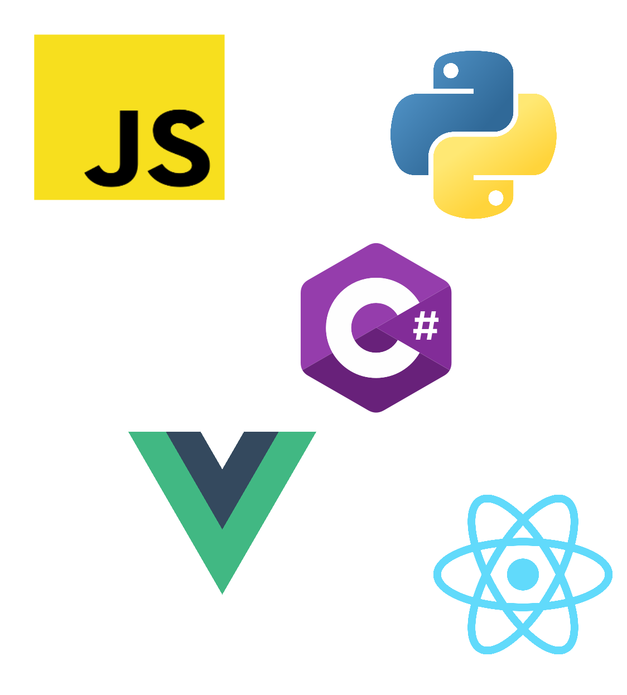

Who Am I
Passionate programmer that loves finding simple solutions to complex problems
Avid gamer who loves analyzing strategies, theorizing optimal play, and watching myself improve over time
Lifelong learner always interested in learning something new
Professional History/Work Experience
8 months experience interning as a fullstack developer at Intelliwave Technologies, working on Sitesense (Inventory management software). Signed to continue working at Intelliwave after graduation
8 months experience interning as a frontend developer at Darkhorse Analytics, creating data visualization in React JS
4 months experience as a research assistant at the University of Alberta at the Centre for Smart Transportation (CST)

What I Have To Offer
Experienced with Python, C#, SQL, JavaScript, Vue, React, and other languages
I am very detail-oriented, always double check my work, and do my best to not go overboard and waste time
I love helping other programmers by listening to their problems and providing helpful suggestions
I'm not afraid to do the hard part of a project, and love the satisfaction of making something meaningful or completing a difficult task